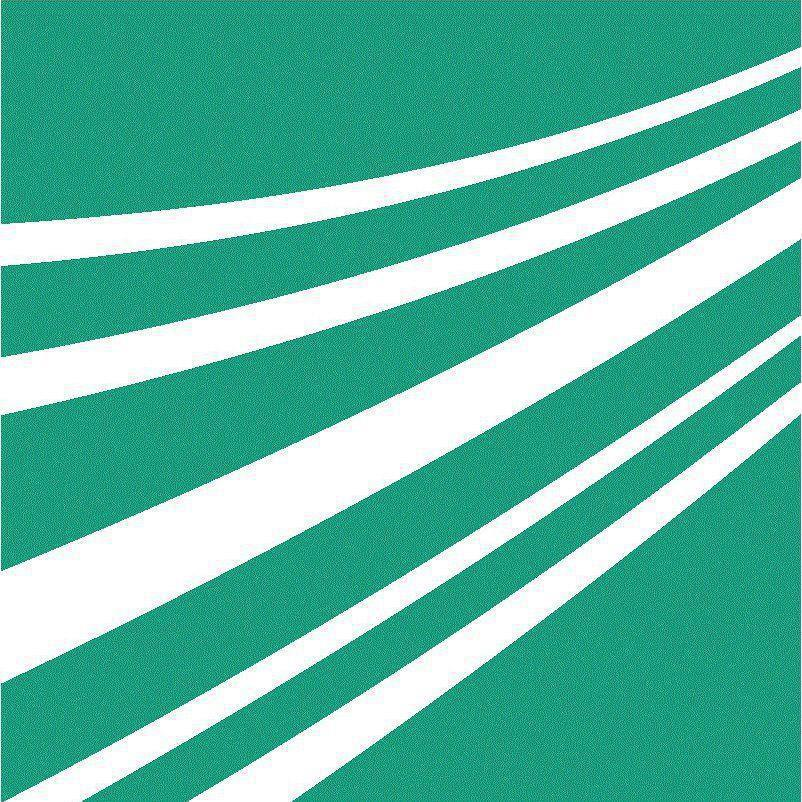

2023 -
MSc in Computer Science at the Technical University of Berlin, with a focus on security and systems.
Highlights so far include building a minimal operating system from scratch, working on embedded security by attacking a bare-metal RISC-V firmware, and exploring topics like machine learning for security, compilers and cloud computing.
2022 - 2023

During my time as a working student at Fraunhofer FKIE, I was part of the Cyber Analysis & Defense (CA&D) department, specifically in the Software and Firmware Security team.
My main contributions included building the IPC plugin, contributing to FACT - the open-source firmware analysis framework of the department - and supporting the team's research.
2019 - 2023
BSc in Computer Science at the University of Bonn, where I first got into information security.
During my studies, I build an inter-process communication tool that led to a working student position at the Fraunhofer Institute. I wrote my bachelor's thesis on symbolic execution, exploring how program paths can be analyzed systematically.